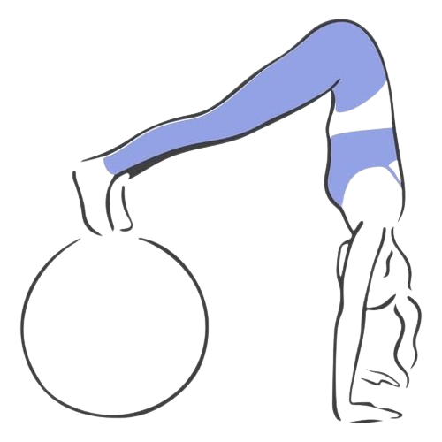

Filmes sobre o Tema

Como lidamos com essas emoções é o que determina como está a qualidade da nossa saúde mental.
Saúde mental está relacionado à forma como uma pessoa reage às exigências, desafios e mudanças da vida e ao modo como harmoniza suas ideias e emoções.
O termo está relacionado à forma como uma pessoa reage às exigências, desafios e mudanças da vida e ao modo como harmoniza suas ideias e emoções. Diariamente, vivenciamos uma série de emoções, boas ou ruins, mas que fazem parte da vida: ALEGRIA, FELICIDADE, TRISTEZA, RAIVA, FRUSTRAÇÃO, ENTRE OUTRAS
Por que é importante gerenciar seu estresse? Gerenciar o estresse pode parecer uma tarefa simples, mas muitas pessoas subestimam a importância desse processo. Essa emoção é uma resposta natural do corpo a situações desafiadoras, mas quando não é controlada pode causar problemas físicos e mentais, afetando não só a saúde, mas também a produtividade e a qualidade do trabalho. Aqui estão algumas razões pelas quais é importante reconhecer e gerenciar essa inquietação:
Segundo os dados da pesquisa, uma boa alimentação saudável pode melhorar os sintomas de transtornos mentais e até melhorar o sucesso acadêmico dos alunos. Por outro lado, a alimentação inadequada pode causar ou agravar sérias condições de saúde.
Uma revisão de diversas pesquisas constatou que uma dieta pobre (com altos níveis de gordura saturada, carboidratos refinados e alimentos processados) está ligada à uma pior saúde mental em crianças e adolescentes. (que são as que são mas afetadas mentalmente ex: ansiedade)
|  |
Manter uma rotina regular de atividade física é benéfico não apenas para o corpo, mas também para a manutenção da saúde mental. Os impactos positivos vão além da resistência física, incluindo melhorias no ânimo, qualidade do sono e prevenção de doenças, como a ansiedade e a depressão.
Segundo dados da Organização Mundial da Saúde (OMS), em 2019, quase um bilhão de pessoas, incluindo 14% dos adolescentes em todo o mundo, viviam com algum transtorno mental. No cenário brasileiro, o país é considerado o mais ansioso do mundo pela OMS, com 18,6 milhões de brasileiros, o que representa quase 10% da população.
Diante desses dados, é fundamental compreender como a atividade física pode ser uma aliada poderosa na promoção do equilíbrio mental. Neste conteúdo, abordaremos a saúde mental e os benefícios que as atividades físicas podem trazer para diminuir quadros ansiosos e depressivos.
Aqui estão alguns dos sintomas mais comuns que podem indicar problemas de saúde mental:
https://encurtador.com.br/jbCw4.
_______________________________________________________________
https://encurtador.com.br/sA2DY.
_______________________________________________________________
https://www.einstein.br/saudemental
_______________________________________________________________
https://www.telavita.com.br/blog/alimentacao-saudavel-na-saude-mental/
_______________________________________________________________
https://encurtador.com.br/cYc28.
_______________________________________________________________
https://encurtador.com.br/4xncH.
_______________________________________________________________
https://www.palmolive.com.br/dicas/bem-estar/como-relaxar-no-meio-da-rotina